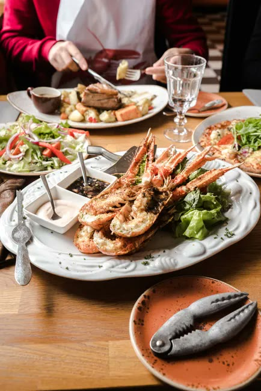

Tourists follow later
How to find food creators in Virginia Beach
Virginia Beach dining runs on two seasons. Summer fills the Oceanfront, but locals keep tables full the rest of the year along Shore Drive, in Great Neck, around Town Center and out in Pungo. Food creators who live here reach those year round diners. This guide shows how to find them, judge local reach, and book comped and paid visits well.
By Jeff, Founder, Magpie · November 15, 2026 · Magpie Learn hub
Find food creators in Virginia Beach by starting with local reach, not follower count. On Magpie, each profile shows what share of a creator audience lives in Hampton Roads before you choose. Pick creators who eat on Shore Drive, in the ViBe and in Pungo, then offer a comped meal or a paid booking at their listed rate.
- Rank by local reach in Hampton Roads, not total followers.
- Choose creators locals already trust for Shore Drive, ViBe and Pungo spots.
- Start with a comped meal, then book paid visits that work.
Why do local food creators matter more than tourist reach in Virginia Beach?
A creator with a big national following may fill a weekend, then leave you empty in February. A Virginia Beach creator with a smaller, local audience brings neighbors who return, bring family, and order again. That repeat business is what carries restaurants on Shore Drive and in Great Neck through the quiet months.
Local creators know the difference between an Oceanfront spot built for visitors and a Lynnhaven oyster place locals guard like a secret. Their reviews sound like a neighbor talking, not an ad. Readers can tell, and they act on it because the recommendation fits their real Friday night choices.
Start with the broader Virginia Beach influencer finder to see how ranking works, then narrow to food. Look for creators who post about farm stands in Pungo, coffee in the ViBe Creative District, and seafood away from the resort strip as often as they post on it.
How can you tell if a food creator really reaches Virginia Beach diners?
On Magpie, local reach is shown on the profile before you choose. It is the share of a creator audience that lives in the market. Rosters are ranked by that share ahead of follower count, so a creator with 3,000 mostly local followers can sit above one with 30,000 scattered followers.
Check the content, too. Does the creator tag Lynnhaven, Shore Drive, Town Center and Pungo in normal weeks, not only during restaurant week? Do comments come from people asking about parking, wait times and kids menus? Those are buying questions from people who can actually visit this week.
Tiers help you budget your expectations. Neighbors have 500 to 2,000 followers, Locals have 2,000 to 15,000, and Headliners have 15,000 and up. In food, a trusted Neighbor who posts honest plate by plate reviews often moves more local tables than a distant Headliner passing through town.
Founding businesses in Virginia Beach see food creators first. Join the founding roster now, review local reach on every profile before you choose, and start with a comped visit when bookings open at launch.
What should a Virginia Beach restaurant offer a food creator?
A comped visit means the meal itself is the pay. The creator delivers one post or reel plus one story that shares the post, honest and disclosed, with a goal of posting within 48 hours and keeping it live for 30 or more days. It is simple, clear, and built for a first try.
For a paid booking, the creator works at their own listed rate and keeps 97 percent. The booking includes one standard license for 90 days, so you can reuse the content in your own channels for a season. Agree the dishes, the timing, and any must show details before the visit, in writing.
Use the checklist below before you invite anyone. A clear brief prevents the usual misses, like a creator arriving during a private event or filming a menu item you are about to retire. Good briefs make good posts, and good posts make the next booking an easy yes for both sides.
- ✓Pick the dishes.: Choose two or three items that travel well on camera and show what locals love, not just what photographs big.
- ✓Set the window.: Invite the creator on a normal service night so the post shows the real room, real plates, and real pace.
- ✓Agree the deliverables.: Confirm one post or reel plus one story, disclosure, the 48 hour goal, and how long the post stays live.
When is the best time to work with food creators in Virginia Beach?
Book ahead of the moments locals decide. Early spring for patio season on Shore Drive, late summer for Lynnhaven oyster season buzz, and fall for Pungo farm and harvest menus. Creators booked two to three weeks out can tease the visit, post on time, and still feel spontaneous to followers.
Do not ignore winter. January and February are when Town Center and Hilltop area restaurants need locals most, and creators are less booked then. A warm, honest winter post about soup, oysters, or a quiet date night spot can do steady work while competitors go silent until spring break crowds return.
If you run a place near the Oceanfront, split your plan. Use tourist facing content in summer, but keep a local creator rhythm all year. The Hampton Roads founding page explains how Magpie is building that year round roster across the metro, not just at the beach.
How do Virginia Beach restaurants get repeat value from creator visits?
Track what you can see. Saves, shares, profile taps, and comments asking for the address tell you more than likes. Ask creators to keep posts live, reply to local comments with them in the first day, and note which dish drove the most questions. That dish leads your next visit and your next special.
Build a small bench. Two to four food creators who know your kitchen, your staff, and your regulars will outperform a new face every month. Invite them back for menu changes and slow weeks. Their followers start to treat your place as part of their own routine, which is exactly the point.
The creator economy is $250B growing to $480B by 2027, but your return is local and concrete. One trusted post that fills ten tables on a Tuesday in Red Mill or Great Neck is worth more than a viral clip watched in another state by people who will never visit.
What do Virginia Beach business owners ask about food creators?
What does it cost to work with a food creator in Virginia Beach?
A comped visit costs the meal itself, with no cash fee. The creator delivers one post or reel plus one story, honest and disclosed. A paid booking costs the creator own listed rate, the creator keeps 97 percent, and it includes one standard license for 90 days. Founding pricing for businesses is published on the Magpie site.
How does Magpie ranking work for food creators?
Magpie ranks creators by local reach ahead of follower count. Local reach is the share of a creator audience that lives in the Hampton Roads market, and it is shown on the profile before a business chooses. A smaller creator whose followers mostly live in Virginia Beach can rank above a larger creator whose audience is spread across the country.
Should an Oceanfront restaurant use creators in winter?
Yes, winter is often the best test. Tourists are gone, so every booking has to come from locals in neighborhoods like Great Neck, Red Mill, and Town Center. A creator who can fill tables in January has real local influence. Start with one comped visit, watch saves and address questions, and book again if locals respond.
Join as a founding business in Virginia Beach
Apply now to see the founding food roster first when Virginia Beach launches.
Join in the Magpie app
Tell us about your restaurant, your neighborhood, and the diners you want more of. Every application gets a decision or a clear status within 2 business days. Founding businesses join now across 45 markets, review local reach before choosing, and can start with comped visits before moving to paid bookings.
Join the founding business list
Already signed up? Sign in at app.magpielocal.com